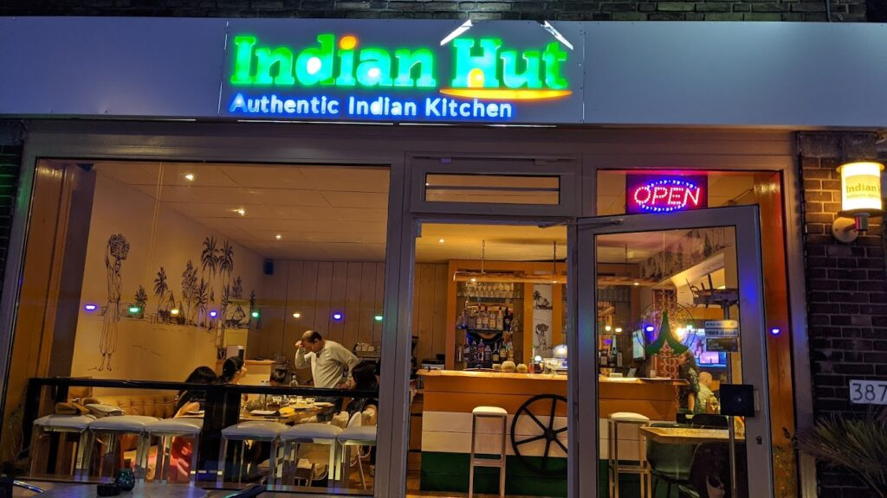
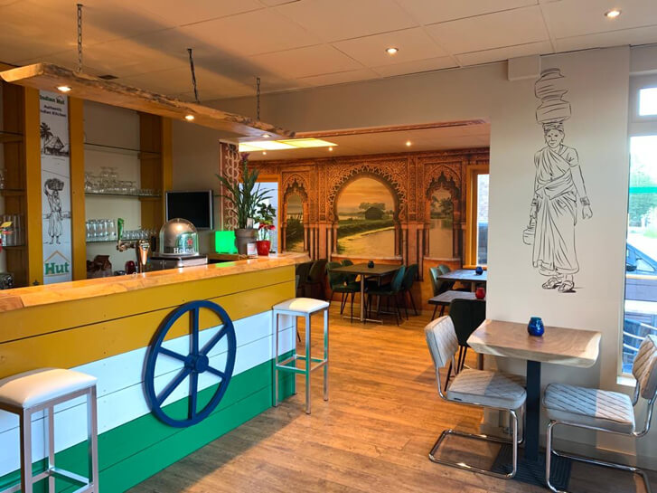
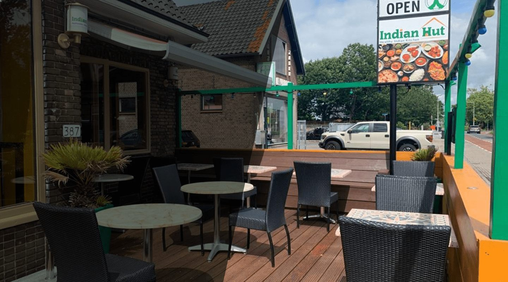
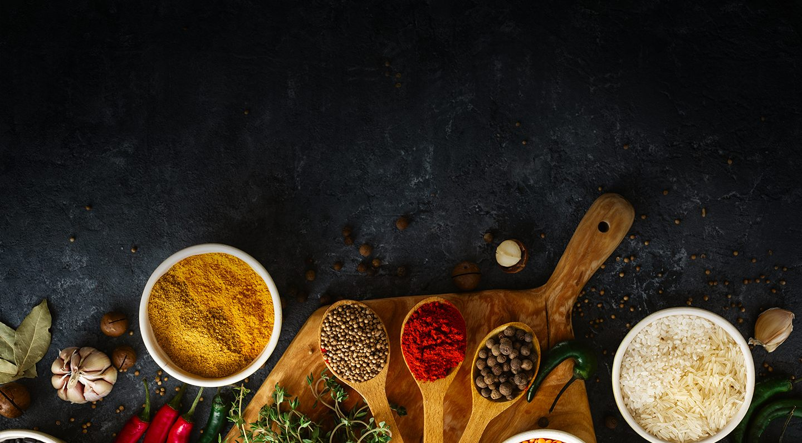

Oosteinderweg 387, Aalsmeer
Authentieke Indiase keuken in Aalsmeer
Tandoor uit de kleioven, curry’s en biryani, bereid met de beste kruiden en specerijen. Kom eten in ons restaurant, laat het bezorgen of laat uw feest door ons verzorgen.
Open maandag en woensdag t/m zondag, 16:00 tot 22:00

Welkom bij Indian Hut
Kom tot rust en geniet van heerlijk Indiaas eten in ons sfeervolle restaurant, gelegen in een groene, rustige omgeving: op loopafstand van het Amsterdamse Bos en Amstelveen Westwijk, direct achter de wasstraat van Loogman.
Bij Indian Hut nemen we u mee op een culinaire reis door het Indiase subcontinent. Ons uitgebreide menu gaat veel verder dan alleen balti en korma, met een zorgvuldig samengestelde selectie van authentieke en unieke gerechten, bereid met de beste kruiden en specerijen.
Wij werken uitsluitend met natuurlijke ingrediënten. Al onze gerechten zijn vrij van kunstmatige kleurstoffen, toevoegingen en conserveringsmiddelen. De volle smaak van onze curry’s, tandoorigerechten en vegetarische specialiteiten ontstaat door verse producten van de hoogste kwaliteit. Dát is het geheim van onze keuken.



Bestel online, wij bezorgen
In Aalsmeer en Amstelveen brengen wij het bij u thuis. Het hele menu is beschikbaar om te bezorgen.
Naar de bestelshopWat gasten zeggen
Eindelijk een goed indiaas restaurant in Aalsmeer. Je proeft de authentieke keuken in een mooie ambiance.
Fred
Heerlijk gegeten! Zeker de moeite waard om nog eens heen te gaan. Ze hebben er overigens heel veel opties voor vegetariërs.
James
Mooi restaurant, heerlijk gegeten! Vriendelijke mensen die plezier in hun werk hebben. Echt een aanrader.
Carolien
A very tasty and authentic Indian meal experience. We were a big group of 10+ people and the staff were so friendly, attentive and helpful.
Anamika
Een van de betere indiase restaurants. We hebben hier inmiddels 1x gegeten en 1 x laten bezorgen. Beide keren was het eten zeer smaakvol.
Ton
Niet bekend met de Indische keuken, heerlijke ervaring. Zeker voor herhaling vatbaar.
Henk
Reserveer uw tafel
Wij nodigen u uit om een unieke Indiase maaltijd in Aalsmeer te komen ervaren. U kunt bellen om een reservering te maken, of ons een mail sturen.
Laat uw catering door ons verzorgen
Bent u van plan een thuisfeest te geven voor een verjaardag, trouwdag of zakelijke bijeenkomst? Neem contact met ons op, dan maken we een menu naar uw persoonlijke keuze.
Heeft u een vraag over onze cateringservice of wilt u een offerte aanvragen? Mail of bel ons, wij nemen zo spoedig mogelijk contact met u op.
- Verjaardagsfeest
- Zakenlunch
- Vergadering
- Bruiloft
- Of een andere gelegenheid
Contact en route
Indian Hut
Oosteinderweg 387
1432 AZ Aalsmeer
Op korte loopafstand van het Amsterdamse Bos en Amstelveen Westwijk, direct achter de wasstraat van Loogman.
+31 (0)6 138 692 97
contact@indianhut.nl
KvK 95774580, btw NL00444428B14
Openingstijden
| Maandag | 16:00 - 22:00 |
|---|---|
| Dinsdag | Gesloten |
| Woensdag | 16:00 - 22:00 |
| Donderdag | 16:00 - 22:00 |
| Vrijdag | 16:00 - 22:00 |
| Zaterdag | 16:00 - 22:00 |
| Zondag | 16:00 - 22:00 |